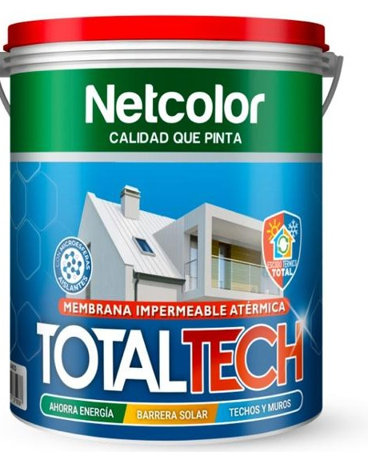

Verano
El sol pega afuera, no adentro.
La terminación blanca y las microesferas actúan como barrera solar: reflejan la radiación que hoy calienta la losa y la convierte en un horno a media tarde.
Netcolor · Membrana impermeable atérmica
TotalTech es la membrana impermeable atérmica de Netcolor. Sus microesferas aislantes reflejan la radiación solar, conservan el calor puertas adentro y sellan techos y muros contra la lluvia. Una sola aplicación, los doce meses del año.
TotalTech
Membrana impermeable atérmica · Blanco
Cómo funciona
Las microesferas aislantes forman una barrera continua sobre techos y muros. En verano devuelven la radiación antes de que entre; en invierno frenan la fuga del calor que ya generaste adentro.
El sol pega afuera, no adentro.
La terminación blanca y las microesferas actúan como barrera solar: reflejan la radiación que hoy calienta la losa y la convierte en un horno a media tarde.
El calor que generás, se queda.
La misma capa aislante reduce la pérdida térmica por techos y paredes, el punto por donde se escapa el confort que estás pagando con la estufa encendida.
Y durante todo el año, la misma película sigue siendo una membrana impermeable: sella fisuras, resiste la lluvia y evita filtraciones.

Sobre nosotros
Somos una fábrica de pinturas que trabaja con una idea simple: un buen producto se nota en la pared años después de aplicarlo. Con esa vara desarrollamos línea por línea, y de ese trabajo nació TotalTech, nuestra membrana impermeable atérmica.
No es una impermeabilizante con un nombre nuevo. Es una formulación propia que suma microesferas aislantes a la película, para que la misma mano de producto que sella el techo también trabaje sobre la temperatura de la casa.
Formulada en nuestro laboratorio, con las microesferas aislantes integradas a la película y no agregadas al momento de aplicar.
Pensada para las dos estaciones: barrera solar en verano y aislación en invierno, sobre techos y sobre muros.
Producto CMA: base agua, bajo olor y menor impacto, tanto al fabricarlo como al aplicarlo.
Producto
Ocho razones por las que TotalTech reemplaza a la impermeabilizante común.
Refleja la radiación en lugar de absorberla. El techo deja de acumular calor y de trasladarlo al ambiente.
Reduce la pérdida de calor por la envolvente. La calefacción rinde más porque el confort no se escapa por el techo.
Forma una película continua y elástica que sella fisuras y acompaña los movimientos del sustrato sin cuartearse.
El corazón de la fórmula: millones de microesferas que rompen el puente térmico dentro de la propia película.
Menos horas de equipo encendido, en verano y en invierno. El ahorro se acumula factura tras factura.
Losas, chapa, membranas asfálticas envejecidas, medianeras y fachadas. Un solo producto para toda la envolvente.
La misma capa que frena el calor amortigua el ruido de la lluvia y el granizo golpeando la chapa.
Su elasticidad absorbe el impacto y protege la chapa de golpes y abolladuras durante la tormenta.
Para la óptima aislación térmica, aplicar 2 L/m². Presentaciones de 4 L y 20 L.
Testimonios
«El primer verano se notó al toque. La habitación de arriba era imposible después de las tres de la tarde y ahora entrás y es otra casa.»
«Lo uso en todos los techos que reparo. Se aplica como una pintura, cubre bien y el cliente deja de llamarme por filtraciones al invierno siguiente.»
«Lo pusimos sobre la chapa del depósito. Bajó el calor adentro y de paso resolvimos las goteras que veníamos parchando hace años.»
Contanos cuántos metros tenés que cubrir y te asesoramos sobre el rendimiento, la preparación de la superficie y el punto de venta más cercano.
Escribinos por WhatsApp